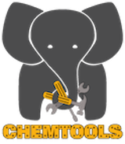

ChemTools 
0.9.0
关于 ChemTools
引用 ChemTools
开源许可
联系方式
用户指南
安装指南
快速入门
新手教程
样例图库
科学手册
概念密度泛函理论
基于密度的定域描述符
基于轨道的定域描述符
非共价相互作用（NCI）
chemtools.tool.analysis.nci
参考文献
高阶文档
开发者指南
API Documentation
推导
Deriving Global Hyper-Softness
Deriving Local Hyper-Softness
Deriving Linear Fukui Functions
Deriving Quadratic Fukui Functions
ChemTools
Docs
»
推导
推导
¶
Deriving Global Hyper-Softness
¶
Faa di Bruno stuff...
Deriving Local Hyper-Softness
¶
Deriving Linear Fukui Functions
¶
Deriving Quadratic Fukui Functions
¶